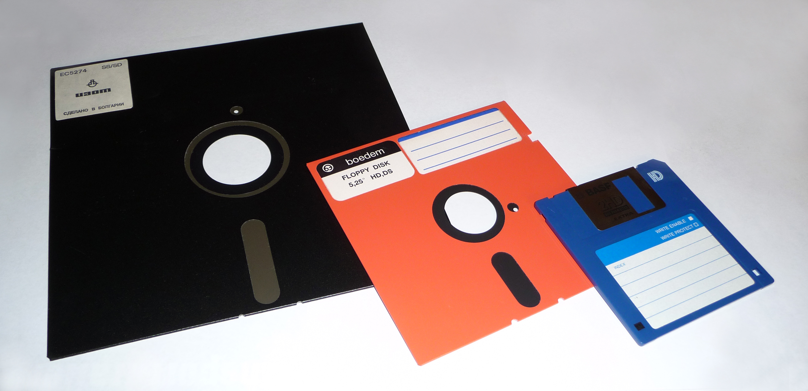
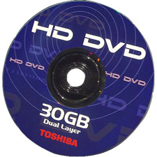

Vinnie Rementer Jr.
Formats Lost not Forgotten
Floppy Disks | LaserDiscs | HD-DVDs
 
There are many obsoluete formats out there as technology grew. Some of my favourite videos on these sorts of formats are from Technology Connections and Foone.
I have only limited experience with outdated formats since I was born in 2000. The only real format war I saw but never really realized was the HDDVD and Bluray war, which Bluray has obviously won by now.
I wonder what the next major format war will look like. I can only imagine since formats seem quite stable now. I wonder if it'll be something more digital or something.